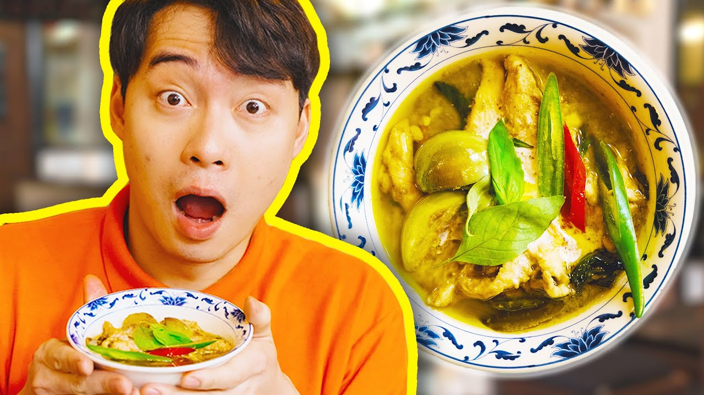

Uncle Roger's Green Curry

Ingredients
- white peppercorn
- coriander seed
- cumin seed
- green chili
- shallots
- garlic
- galangal
- kaffir lime leaf
- coriander root
- lemongrass
- shrimp paste
- fresh coconut milk
- chicken thigh
- fish sauce
- thai eggplant
- thai basil
- red chili
- bamboo shoot
Steps
- Toast your spices until fragrant(white peppercorn, coriander seed, cumin seed)
- Pound freshly toasted spice in pestle and mortar and pour it out when done
- Chop up your chili
- Put chili, shallot, garlic and galangal,kaffir lime leaf, lemongrass, and coriander root in mortal and pestle and pound
- As you pound add your ground spices to add friction and make it faster and some salt
- Add shrimp paste when done pounding and continue
- Add coconut milk to hot oil in wok
- Put in green curry paste
- Put in chicken thigh
- Add in fish sauce
- Put in thai eggplant, thai basil, red chili bamboo shoot and kaffir lime leaf
- Add palm sugar
- Add MSG
- Serve and eat while you judge jamie Oliver